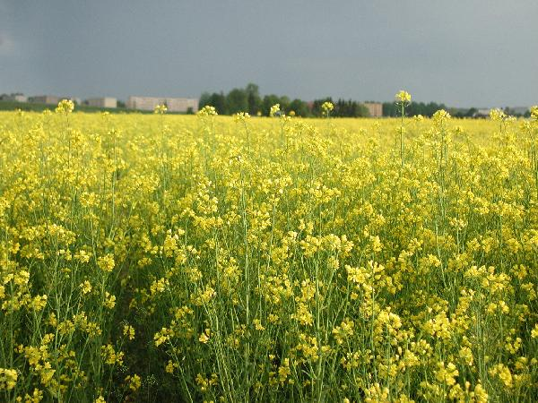

|
 |
 |
| |
| Liik: |
Talirüps |
| Päritolu: |
Svalöf Weibull AB (Rootsi) ja Jõgeva Sordiaretuse Instituudi ühissort, 18 erineva liini populatsioonist saadud valik
|
| Aretaja: |
Christer Persson, Saima Kalev |
| Kasvuaeg: |
kasvuaeg Eestis 323- 345 päeva, valmides ei varise nii kergesti kui raps, see võimaldab vajadusel koristusega pisut viivitada
|
| Sordileht: |
2002 |
| Sordi tunnused: |
kodarikulehed ja alumised varrelehed on rohelised, kaetud väikeste karvakestega (rapsil siledad), ülemised varrelehed sinakad ja kaetud vahaja kirmega (rapsil on kõik lehed sinakad, vahaja kirmega kaetud), varrelehed haaravad vart 1/3 - 2/3 ulatuses (rapsil kuni 1/3 ulatuses), varre pikkus võib ulatuda 150 cm, seemned värvilt 30% kollased- kollakaspruunid ja 70% tume- punakaspruunid (rapsil mustad), risttolmleja
|
| Majanduslikud omadused: |
seemnete õlisisaldus on aastate (1998-2002) keskmisena 46%(k.a.) (nõutud minimaalselt 40%), õlisisaldus on jäänud 3-4% väiksemaks kui rapsil, proteiini on kuivaines keskmiselt 41,2%, glükosinolaatide sisaldus aastate (1998-2002) keskmisena
14,2 mmol/g (lubatud >30 mmol/g), eruukhapet seemnetes ei sisaldu,
seemnete aminohappeline koostis ei erine oluliselt rapsist,
1000 tera mass 2,5 - 3,5 g (rapsil 3,5 - 4,5 g), saak on suuresti sõltuv talvitumisest, minimaalne saak on olnud 1539 kg/ha ja maksimaalne saak 3078 kg/ha (Jõgeva
SAI katsed), saagikuselt enam-vähem võrdne rapsiga. Kuna talirüpsi kasvukuhik asub allpool mullapinda, siis vastupidavus madalatele temperatuuridele on suhteliselt hea (talirapsi kasvukuhik asub maapinnal), ohtlik
on aga talvine sula, seisev vesi ja jääkoorik hävitavad taimed, põllu valikul tuleb jälgida, et põld oleks võimalikult sile ja ei koguneks seisvat vett
|
| Haiguskindlus: |
kuna haigustele vastupanuvõime on parem kui suvistel õlikultuuridel, ei ole massilist nakatumist esinenud ja keemilist tõrjet ei ole vaja olnud teha, kahjurite rüüstet peaaegu ei esine, sest õitseb enne hiilamardika massilist ilmumist ja sügisesi külve maakirbud ei kahjusta
|
| Soovitus kasvatamiseks: |
külvisenormiks 4...6 kg/ha (suurem norm siis, kui idanemistingimused on halvad), vajab mulda, mille pH on 5,5-6,0, happelistel muldadel on saak madal, turvasmuldadel ei talvitu, sobilik külvata vahemikus 10…20 augustini (10 päeva hiljem
kui talirapsi), talvitumiseks vajalik 8 pärislehe faas, optimaalne külvisügavus 2-3 cm, kiire algarenguga, suudab paremini konkureerida umbrohtudega, enne
külvi võib põldu pritsida sobiva umbrohutõrje preparaadiga, kuigi talirüps vajab saagi moodustamiseks vähem lämmastikku kui teised õlikultuurid, on siiski
vaja väetada nii sügisel (kompleksväetis), kui kevadel (N-väetis), on heaks vahekultuuriks teraviljade külvikorras, varajase valmimise tõttu sobib hästi koristuskonveierisse, juurestik tungib sügavale, kobestades ka künnikihi alust kihti, aidates taastada kapillaarvõrgustikku
|
| Lisateave: |
Lea Narits |
| |
|
|
|